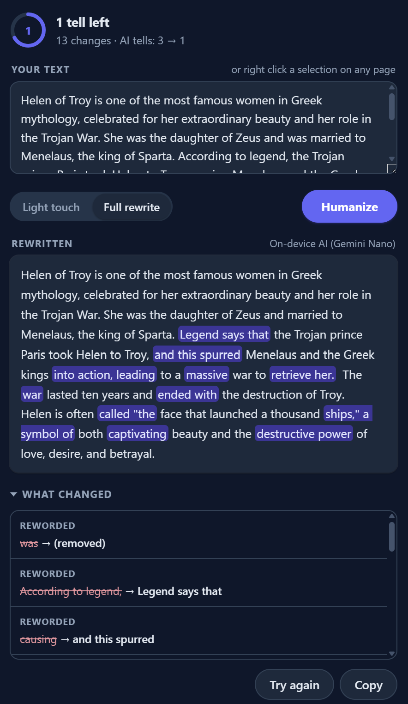

Second Draft is a Chrome extension that removes em dashes, AI vocabulary like "delve" and "tapestry", chatbot filler, and forced rule-of-three lists. Select text on any page, review the edits, apply them in place.

In today's rapidly evolving landscape, it is crucial to delve into the vibrant tapestry of strategies that organizations leverage to foster meaningful engagement, ensuring lasting impact across teams.
Teams try a lot of things to get people engaged. Some of it sticks. The part worth copying is usually the part someone actually bothered to explain.
AI tells: 6 to 0 across 9 edits
Not on the Chrome Web Store yet. To run it today: clone the repository, run
npm install and npm run build, then load the
.output/chrome-mv3 folder as an unpacked extension from
chrome://extensions with Developer mode on.